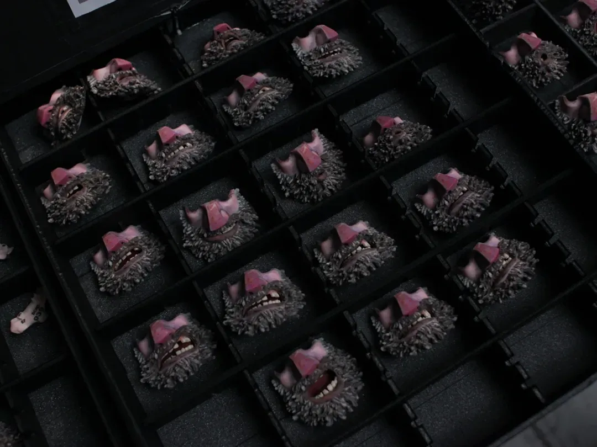
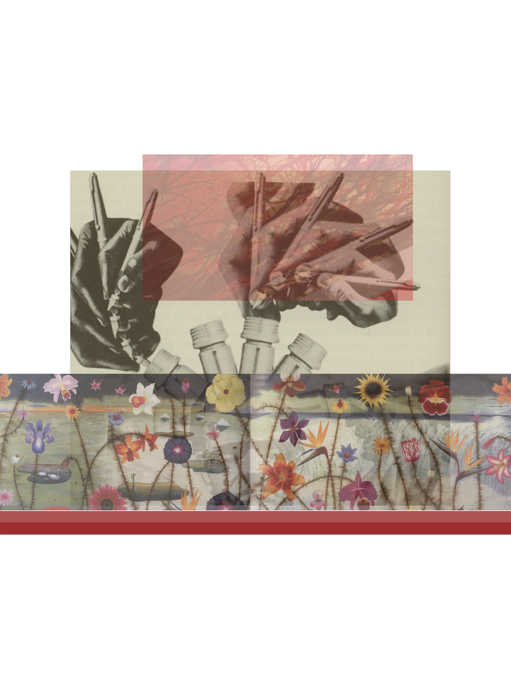

If I had to bet, I'd say you know at least ONE person who found stop motion too jarring to watch as a kid. The concept of this 'Uncanny Valley' describes that squirmy feeling people get when encountering humanoid figures that are nearly-but not quite-lifelike. This general phenomenon becomes especially relevant in the conversations surrounding stop-motion animation, a medium that blurs the line between realistic and human representations.


This inherent tension creates a mix of discomfort and fascination, often leading directors to make intentional artistic choices about the themes and tone their movie evokes. A tool of the eerie, films like Coraline leverages uncanny design to reinforce its horror themes.
Frame by frame, physical puppet models are given life through subtle, handcrafted movement. This tactile element can trigger uncanny sensations, especially when the characters are TOO human-like in form or motion. These often "otherworldy" characters are designed to be stylized and exaggerated, yet the fluid capabilities of photographing physical models and their often over emotive expressions lead to unsettling feelings in the viewer. The audience is caught with the dissonance of recognizing the characters as "human enough" to empathize with, but still alien in their textures, movements, or facial proportions. This eeriness sets itself apart from other animated forms because of the physical reality the traces left behind by a real life person's hands.
 